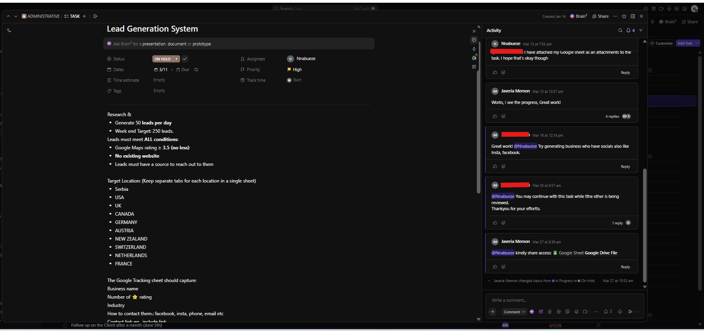

Project Overview
During my internship with PUEPR, I supported the Business Development team by conducting structured business research across multiple international markets. My responsibility was to identify qualified businesses that satisfied predefined qualification criteria before they entered the company's outreach pipeline. Rather than simply collecting business names, I validated each prospect, confirmed compliance with the project requirements, organized the information into standardized datasets, and maintained production targets while ensuring data accuracy. This project combined market research, lead qualification, business documentation, and operational support to provide reliable prospect data for future outreach campaigns.
Business Challenge
The Business Development team required a continuous pipeline of qualified businesses that could benefit from professional website development services. Research had to be performed consistently across multiple countries while ensuring every prospect met strict qualification requirements. Poor-quality or incomplete information would reduce campaign effectiveness and increase manual verification work.
My Responsibilities
- Researched businesses using Google Maps and Google Search.
- Generated up to 50 qualified business prospects daily.
- Maintained weekly production targets of 250 qualified leads.
- Verified business information before documentation.
- Confirmed businesses met qualification requirements.
- Collected structured business information into Google Sheets.
- Organized prospects by country for easier campaign management.
- Prepared clean datasets for Business Development outreach.
Qualification Criteria
- Google rating of 3.5 stars or higher.
- No existing business website.
- Valid business contact information.
- Business located within assigned target countries.
- Accurate business category and location verification.
Countries Covered
Tools Used
Evidence Gallery
1. Business Lead Research Assignment

This ClickUp task outlined the complete operational requirements for the research project, including daily production targets of 50 qualified businesses, weekly objectives, business qualification rules, approved research countries, and documentation requirements. Working from a structured task specification ensured consistency, accountability, and high-quality research throughout the assignment.
2. Multi-Country Business Prospect Database

Qualified businesses were documented in a structured Google Sheets database containing business names, categories, ratings, addresses, countries, contact information, website status, source links, and research dates. Individual worksheets were maintained for each assigned country, allowing the Business Development team to efficiently manage outreach campaigns across multiple international markets.
Business Impact
- Supported Business Development with verified business research.
- Maintained consistent daily and weekly production targets.
- Delivered organized datasets ready for outreach campaigns.
- Improved consistency of business qualification across multiple countries.
- Reduced manual verification through standardized research procedures.
- Provided reliable prospect information for future sales engagement.